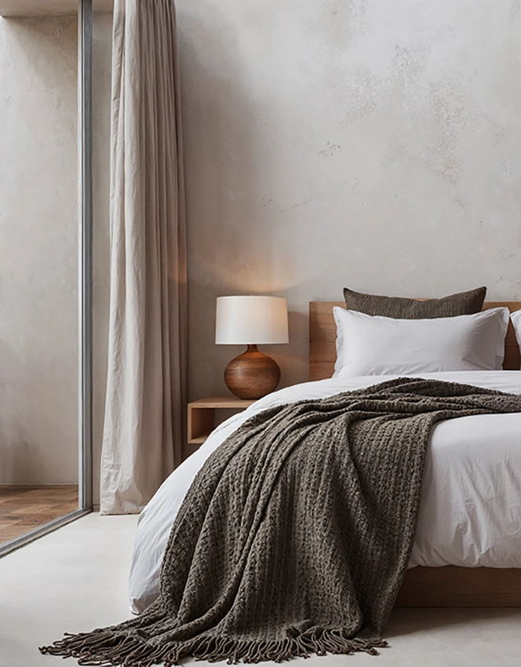

01
Aplicación de microcemento en Valencia
El microcemento permite crear superficies continuas con una estética limpia y contemporánea, adaptándose a diferentes tipos de espacios y soportes.
Su correcta aplicación exige controlar la preparación de la base, las capas de trabajo, los encuentros y el acabado final para conseguir una superficie uniforme y estable.
Kerania ejecuta trabajos de microcemento prestando especial atención a la continuidad visual, la textura y la resolución de los detalles.